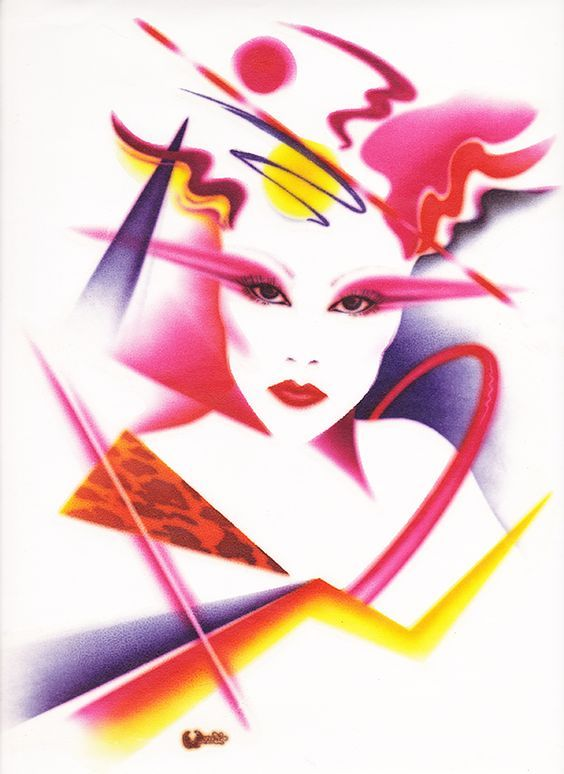
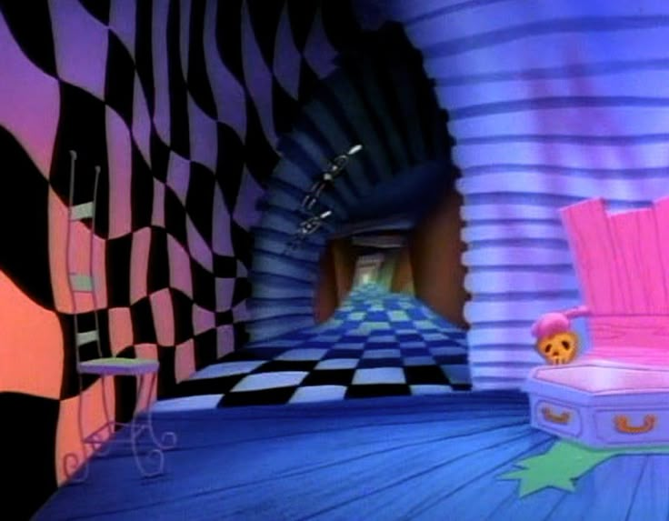
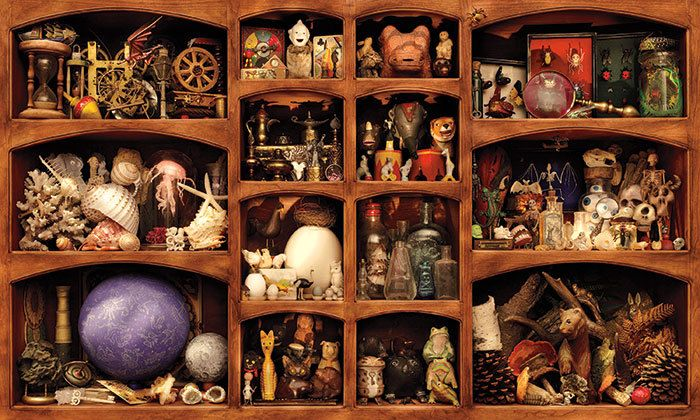
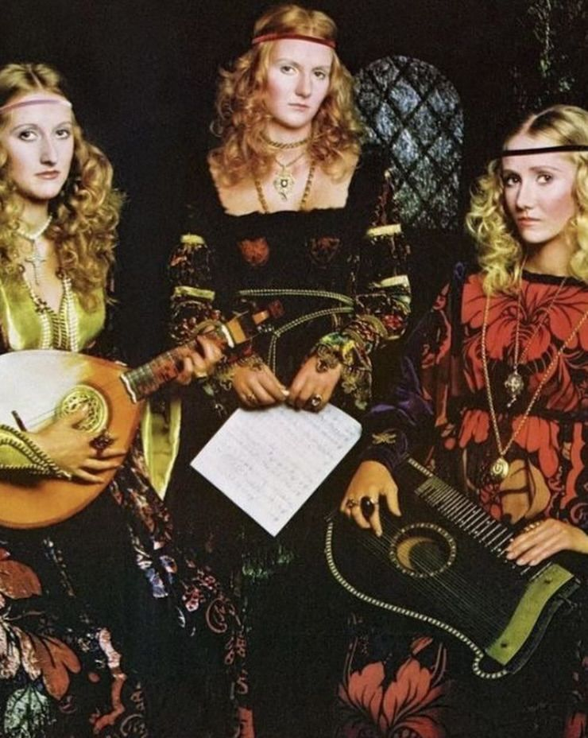

I really like the 80s and new wave in particular, so of course I love this type of art. This era of art is well known for an uptick in works created by or emphasized with airbrushing.

This aesthetic really reminds me of my childhood - while the picture featured above is a darker take on it, Wacky Pomo is commonly associated with 80s-00s children's advertising.

With the rise of minimalism over the past 10 years or so, I yearn for clutter and maximalism. Yes, it would be a nightmare to dust, but it tells me more about you than grey walls and white cabinets!

This is less of an aesthetic and more of an era of fashion, but I don't really care. People in the 60s loved medieval fashion to an obsessive degree, and I understand why. Bring it back!